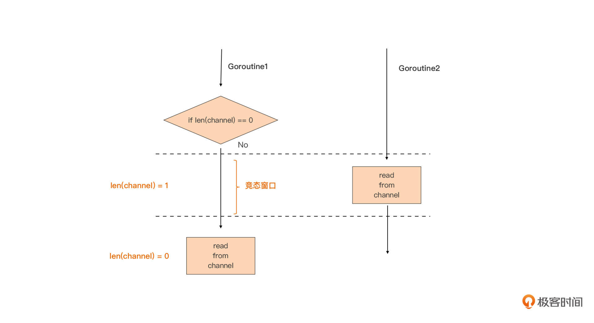
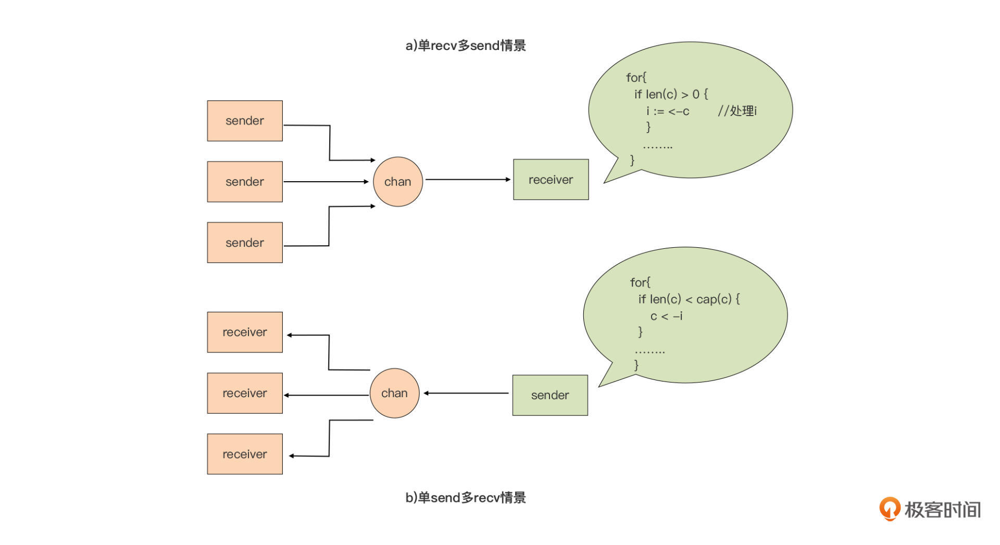

- 00 开篇词 这样入门Go，才能少走弯路.md.html
- 01 前世今生：你不得不了解的Go的历史和现状.md.html
- 02 拒绝“Hello and Bye”：Go语言的设计哲学是怎么一回事？.md.html
- 03 配好环境：选择一种最适合你的Go安装方法.md.html
- 04 初窥门径：一个Go程序的结构是怎样的？.md.html
- 05 标准先行：Go项目的布局标准是什么？.md.html
- 06 构建模式：Go是怎么解决包依赖管理问题的？.md.html
- 07 构建模式：Go Module的6类常规操作.md.html
- 08 入口函数与包初始化：搞清Go程序的执行次序.md.html
- 09 即学即练：构建一个Web服务就是这么简单.md.html
- 10 变量声明：静态语言有别于动态语言的重要特征.md.html
- 11 代码块与作用域：如何保证变量不会被遮蔽？.md.html
- 12 基本数据类型：Go原生支持的数值类型有哪些？.md.html
- 13 基本数据类型：为什么Go要原生支持字符串类型？.md.html
- 14 常量：Go在“常量”设计上的创新有哪些？.md.html
- 15 同构复合类型：从定长数组到变长切片.md.html
- 16 复合数据类型：原生map类型的实现机制是怎样的？.md.html
- 17 复合数据类型：用结构体建立对真实世界的抽象.md.html
- 18 控制结构：if的“快乐路径”原则.md.html
- 19 控制结构：Go的for循环，仅此一种.md.html
- 20 控制结构：Go中的switch语句有哪些变化？.md.html
- 21 函数：请叫我“一等公民”.md.html
- 22 函数：怎么结合多返回值进行错误处理？.md.html
- 23 函数：怎么让函数更简洁健壮？.md.html
- 24 方法：理解“方法”的本质.md.html
- 25 方法：方法集合与如何选择receiver类型？.md.html
- 26 方法：如何用类型嵌入模拟实现“继承”？.md.html
- 27 即学即练：跟踪函数调用链，理解代码更直观.md.html
- 28 接口：接口即契约.md.html
- 29 接口：为什么nil接口不等于nil？.md.html
- 30 接口：Go中最强大的魔法.md.html
- 31 并发：Go的并发方案实现方案是怎样的？.md.html
- 32 并发：聊聊Goroutine调度器的原理.md.html
- 33 并发：小channel中蕴含大智慧.md.html
- 34 并发：如何使用共享变量？.md.html
- 35 即学即练：如何实现一个轻量级线程池？.md.html
- 36 打稳根基：怎么实现一个TCP服务器？（上）.md.html
- 37 代码操练：怎么实现一个TCP服务器？（中）.md.html
- 38 成果优化：怎么实现一个TCP服务器？（下）.md.html
- 39 驯服泛型：了解类型参数.md.html
- 40 驯服泛型：定义泛型约束.md.html
- 41 驯服泛型：明确使用时机.md.html
- 元旦快乐 这是一份暂时停更的声明.md.html
- 加餐 作为Go Module的作者，你应该知道的几件事.md.html
- 加餐 如何拉取私有的Go Module？.md.html
- 加餐 我“私藏”的那些优质且权威的Go语言学习资料.md.html
- 加餐 聊聊Go 1.17版本的那些新特性.md.html
- 加餐 聊聊Go语言的指针.md.html
- 加餐 聊聊最近大热的Go泛型.md.html
- 大咖助阵 叶剑峰：Go语言中常用的那些代码优化点.md.html
- 大咖助阵 大明：Go泛型，泛了，但没有完全泛.md.html
- 大咖助阵 孔令飞：从小白到“老鸟”，我的Go语言进阶之路.md.html
- 大咖助阵 徐祥曦：从销售到分布式存储工程师，我与 Go 的故事.md.html
- 大咖助阵 曹春晖：聊聊 Go 语言的 GC 实现.md.html
- 大咖助阵 海纳：聊聊语言中的类型系统与泛型.md.html
- 期中测试 一起检验下你的学习成果吧.md.html
- 用户故事 罗杰：我的Go语言学习之路.md.html
- 结束语 和你一起迎接Go的黄金十年.md.html
- 结课测试 快来检验下你的学习成果吧！.md.html
- 捐赠
33 并发：小channel中蕴含大智慧
你好，我是Tony Bai。
通过上两节课的学习，我们知道了Go语言实现了基于CSP（Communicating Sequential Processes）理论的并发方案。
Go语言的CSP模型的实现包含两个主要组成部分：一个是Goroutine，它是Go应用并发设计的基本构建与执行单元；另一个就是channel，它在并发模型中扮演着重要的角色。channel既可以用来实现Goroutine间的通信，还可以实现Goroutine间的同步。它就好比Go并发设计这门“武功”的秘籍口诀，可以说，学会在Go并发设计时灵活运用channel，才能说真正掌握了Go并发设计的真谛。
所以，在这一讲中，我们就来系统学习channel这一并发原语的基础语法与常见使用方法。
作为一等公民的channel
Go对并发的原生支持可不是仅仅停留在口号上的，Go在语法层面将并发原语channel作为一等公民对待。在前面的第21讲中我们已经学过“一等公民”这个概念了，如果你记不太清了可以回去复习一下。
那channel作为一等公民意味着什么呢？
这意味着我们可以像使用普通变量那样使用channel，比如，定义channel类型变量、给channel变量赋值、将channel作为参数传递给函数/方法、将channel作为返回值从函数/方法中返回，甚至将channel发送到其他channel中。这就大大简化了channel原语的使用，提升了我们开发者在做并发设计和实现时的体验。
创建channel
和切片、结构体、map等一样，channel也是一种复合数据类型。也就是说，我们在声明一个channel类型变量时，必须给出其具体的元素类型，比如下面的代码这样：
var ch chan int
这句代码里，我们声明了一个元素为int类型的channel类型变量ch。
如果channel类型变量在声明时没有被赋予初值，那么它的默认值为nil。并且，和其他复合数据类型支持使用复合类型字面值作为变量初始值不同，为channel类型变量赋初值的唯一方法就是使用make这个Go预定义的函数，比如下面代码：
ch1 := make(chan int)
ch2 := make(chan int, 5)
这里，我们声明了两个元素类型为int的channel类型变量ch1和ch2，并给这两个变量赋了初值。但我们看到，两个变量的赋初值操作使用的make调用的形式有所不同。
第一行我们通过make(chan T)创建的、元素类型为T的channel类型，是无缓冲channel，而第二行中通过带有capacity参数的make(chan T, capacity)创建的元素类型为T、缓冲区长度为capacity的channel类型，是带缓冲channel。
这两种类型的变量关于发送（send）与接收（receive）的特性是不同的，我们接下来就基于这两种类型的channel，看看channel类型变量如何进行发送和接收数据元素。
发送与接收
Go提供了<-操作符用于对channel类型变量进行发送与接收操作：
ch1 <- 13 // 将整型字面值13发送到无缓冲channel类型变量ch1中
n := <- ch1 // 从无缓冲channel类型变量ch1中接收一个整型值存储到整型变量n中
ch2 <- 17 // 将整型字面值17发送到带缓冲channel类型变量ch2中
m := <- ch2 // 从带缓冲channel类型变量ch2中接收一个整型值存储到整型变量m中
这里我要提醒你一句，在理解channel的发送与接收操作时，你一定要始终牢记：channel是用于Goroutine间通信的，所以绝大多数对channel的读写都被分别放在了不同的Goroutine中。
现在，我们先来看看无缓冲channel类型变量（如ch1）的发送与接收。
由于无缓冲channel的运行时层实现不带有缓冲区，所以Goroutine对无缓冲channel的接收和发送操作是同步的。也就是说，对同一个无缓冲channel，只有对它进行接收操作的Goroutine和对它进行发送操作的Goroutine都存在的情况下，通信才能得以进行，否则单方面的操作会让对应的Goroutine陷入挂起状态，比如下面示例代码：
func main() {
ch1 := make(chan int)
ch1 <- 13 // fatal error: all goroutines are asleep - deadlock!
n := <-ch1
println(n)
}
在这个示例中，我们创建了一个无缓冲的channel类型变量ch1，对ch1的读写都放在了一个Goroutine中。
运行这个示例，我们就会得到fatal error，提示我们所有Goroutine都处于休眠状态，程序处于死锁状态。要想解除这种错误状态，我们只需要将接收操作，或者发送操作放到另外一个Goroutine中就可以了，比如下面代码：
func main() {
ch1 := make(chan int)
go func() {
ch1 <- 13 // 将发送操作放入一个新goroutine中执行
}()
n := <-ch1
println(n)
}
由此，我们可以得出结论：对无缓冲channel类型的发送与接收操作，一定要放在两个不同的Goroutine中进行，否则会导致deadlock。
接下来，我们再来看看带缓冲channel的发送与接收操作。
和无缓冲channel相反，带缓冲channel的运行时层实现带有缓冲区，因此，对带缓冲channel的发送操作在缓冲区未满、接收操作在缓冲区非空的情况下是异步的（发送或接收不需要阻塞等待）。
也就是说，对一个带缓冲channel来说，在缓冲区未满的情况下，对它进行发送操作的Goroutine并不会阻塞挂起；在缓冲区有数据的情况下，对它进行接收操作的Goroutine也不会阻塞挂起。
但当缓冲区满了的情况下，对它进行发送操作的Goroutine就会阻塞挂起；当缓冲区为空的情况下，对它进行接收操作的Goroutine也会阻塞挂起。
如果光看文字还不是很好理解，你可以再看看下面几个关于带缓冲channel的操作的例子：
ch2 := make(chan int, 1)
n := <-ch2 // 由于此时ch2的缓冲区中无数据，因此对其进行接收操作将导致goroutine挂起
ch3 := make(chan int, 1)
ch3 <- 17 // 向ch3发送一个整型数17
ch3 <- 27 // 由于此时ch3中缓冲区已满，再向ch3发送数据也将导致goroutine挂起
也正是因为带缓冲channel与无缓冲channel在发送与接收行为上的差异，在具体使用上，它们有各自的“用武之地”，这个我们等会再细说，现在我们先继续把channel的基本语法讲完。
使用操作符<-，我们还可以声明只发送channel类型（send-only）和只接收channel类型（recv-only），我们接着看下面这个例子：
ch1 := make(chan<- int, 1) // 只发送channel类型
ch2 := make(<-chan int, 1) // 只接收channel类型
<-ch1 // invalid operation: <-ch1 (receive from send-only type chan<- int)
ch2 <- 13 // invalid operation: ch2 <- 13 (send to receive-only type <-chan int)
你可以从这个例子中看到，试图从一个只发送channel类型变量中接收数据，或者向一个只接收channel类型发送数据，都会导致编译错误。通常只发送channel类型和只接收channel类型，会被用作函数的参数类型或返回值，用于限制对channel内的操作，或者是明确可对channel进行的操作的类型，比如下面这个例子：
func produce(ch chan<- int) {
for i := 0; i < 10; i++ {
ch <- i + 1
time.Sleep(time.Second)
}
close(ch)
}
func consume(ch <-chan int) {
for n := range ch {
println(n)
}
}
func main() {
ch := make(chan int, 5)
var wg sync.WaitGroup
wg.Add(2)
go func() {
produce(ch)
wg.Done()
}()
go func() {
consume(ch)
wg.Done()
}()
wg.Wait()
}
在这个例子中，我们启动了两个Goroutine，分别代表生产者（produce）与消费者（consume）。生产者只能向channel中发送数据，我们使用chan<- int作为produce函数的参数类型；消费者只能从channel中接收数据，我们使用<-chan int作为consume函数的参数类型。
在消费者函数consume中，我们使用了for range循环语句来从channel中接收数据，for range会阻塞在对channel的接收操作上，直到channel中有数据可接收或channel被关闭循环，才会继续向下执行。channel被关闭后，for range循环也就结束了。
关闭channel
在上面的例子中，produce函数在发送完数据后，调用Go内置的close函数关闭了channel。channel关闭后，所有等待从这个channel接收数据的操作都将返回。
这里我们继续看一下采用不同接收语法形式的语句，在channel被关闭后的返回值的情况：
n := <- ch // 当ch被关闭后，n将被赋值为ch元素类型的零值
m, ok := <-ch // 当ch被关闭后，m将被赋值为ch元素类型的零值, ok值为false
for v := range ch { // 当ch被关闭后，for range循环结束
... ...
}
我们看到，通过“comma, ok”惯用法或for range语句，我们可以准确地判定channel是否被关闭。而单纯采用n := <-ch形式的语句，我们就无法判定从ch返回的元素类型零值，究竟是不是因为channel被关闭后才返回的。
另外，从前面produce的示例程序中，我们也可以看到，channel是在produce函数中被关闭的，这也是channel的一个使用惯例，那就是发送端负责关闭channel。
这里为什么要在发送端关闭channel呢？
这是因为发送端没有像接受端那样的、可以安全判断channel是否被关闭了的方法。同时，一旦向一个已经关闭的channel执行发送操作，这个操作就会引发panic，比如下面这个示例：
ch := make(chan int, 5)
close(ch)
ch <- 13 // panic: send on closed channel
select
当涉及同时对多个channel进行操作时，我们会结合Go为CSP并发模型提供的另外一个原语select，一起使用。
通过select，我们可以同时在多个channel上进行发送/接收操作：
select {
case x := <-ch1: // 从channel ch1接收数据
... ...
case y, ok := <-ch2: // 从channel ch2接收数据，并根据ok值判断ch2是否已经关闭
... ...
case ch3 <- z: // 将z值发送到channel ch3中:
... ...
default: // 当上面case中的channel通信均无法实施时，执行该默认分支
}
当select语句中没有default分支，而且所有case中的channel操作都阻塞了的时候，整个select语句都将被阻塞，直到某一个case上的channel变成可发送，或者某个case上的channel变成可接收，select语句才可以继续进行下去。关于select语句的妙用，我们在后面还会细讲，这里我们先简单了解它的基本语法。
看到这里你应该能感受到，channel和select两种原语的操作都十分简单，它们都遵循了Go语言“追求简单”的设计哲学，但它们却为Go并发程序带来了强大的表达能力。学习了这些基础用法后，接下来我们再深一层，看看Go并发原语channel的一些惯用法。同样地，这里我们也分成无缓冲channel和带缓冲channel两种情况来分析。
无缓冲channel的惯用法
无缓冲channel兼具通信和同步特性，在并发程序中应用颇为广泛。现在我们来看看几个无缓冲channel的典型应用：
第一种用法：用作信号传递
无缓冲channel用作信号传递的时候，有两种情况，分别是1对1通知信号和1对n通知信号。我们先来分析下1对1通知信号这种情况。
我们直接来看具体的例子：
type signal struct{}
func worker() {
println("worker is working...")
time.Sleep(1 * time.Second)
}
func spawn(f func()) <-chan signal {
c := make(chan signal)
go func() {
println("worker start to work...")
f()
c <- signal{}
}()
return c
}
func main() {
println("start a worker...")
c := spawn(worker)
<-c
fmt.Println("worker work done!")
}
在这个例子中，spawn函数返回的channel，被用于承载新Goroutine退出的“通知信号”，这个信号专门用作通知main goroutine。main goroutine在调用spawn函数后一直阻塞在对这个“通知信号”的接收动作上。
我们来运行一下这个例子：
start a worker...
worker start to work...
worker is working...
worker work done!
有些时候，无缓冲channel还被用来实现1对n的信号通知机制。这样的信号通知机制，常被用于协调多个Goroutine一起工作，比如下面的例子：
func worker(i int) {
fmt.Printf("worker %d: is working...\n", i)
time.Sleep(1 * time.Second)
fmt.Printf("worker %d: works done\n", i)
}
type signal struct{}
func spawnGroup(f func(i int), num int, groupSignal <-chan signal) <-chan signal {
c := make(chan signal)
var wg sync.WaitGroup
for i := 0; i < num; i++ {
wg.Add(1)
go func(i int) {
<-groupSignal
fmt.Printf("worker %d: start to work...\n", i)
f(i)
wg.Done()
}(i + 1)
}
go func() {
wg.Wait()
c <- signal{}
}()
return c
}
func main() {
fmt.Println("start a group of workers...")
groupSignal := make(chan signal)
c := spawnGroup(worker, 5, groupSignal)
time.Sleep(5 * time.Second)
fmt.Println("the group of workers start to work...")
close(groupSignal)
<-c
fmt.Println("the group of workers work done!")
}
这个例子中，main goroutine创建了一组5个worker goroutine，这些Goroutine启动后会阻塞在名为groupSignal的无缓冲channel上。main goroutine通过close(groupSignal)向所有worker goroutine广播“开始工作”的信号，收到groupSignal后，所有worker goroutine会“同时”开始工作，就像起跑线上的运动员听到了裁判员发出的起跑信号枪声。
这个例子的运行结果如下：
start a group of workers...
the group of workers start to work...
worker 3: start to work...
worker 3: is working...
worker 4: start to work...
worker 4: is working...
worker 1: start to work...
worker 1: is working...
worker 5: start to work...
worker 5: is working...
worker 2: start to work...
worker 2: is working...
worker 3: works done
worker 4: works done
worker 5: works done
worker 1: works done
worker 2: works done
the group of workers work done!
我们可以看到，关闭一个无缓冲channel会让所有阻塞在这个channel上的接收操作返回，从而实现了一种1对n的“广播”机制。
第二种用法：用于替代锁机制
无缓冲channel具有同步特性，这让它在某些场合可以替代锁，让我们的程序更加清晰，可读性也更好。我们可以对比下两个方案，直观地感受一下。
首先我们看一个传统的、基于“共享内存”+“互斥锁”的Goroutine安全的计数器的实现：
type counter struct {
sync.Mutex
i int
}
var cter counter
func Increase() int {
cter.Lock()
defer cter.Unlock()
cter.i++
return cter.i
}
func main() {
var wg sync.WaitGroup
for i := 0; i < 10; i++ {
wg.Add(1)
go func(i int) {
v := Increase()
fmt.Printf("goroutine-%d: current counter value is %d\n", i, v)
wg.Done()
}(i)
}
wg.Wait()
}
在这个示例中，我们使用了一个带有互斥锁保护的全局变量作为计数器，所有要操作计数器的Goroutine共享这个全局变量，并在互斥锁的同步下对计数器进行自增操作。
接下来我们再看更符合Go设计惯例的实现，也就是使用无缓冲channel替代锁后的实现：
type counter struct {
c chan int
i int
}
func NewCounter() *counter {
cter := &counter{
c: make(chan int),
}
go func() {
for {
cter.i++
cter.c <- cter.i
}
}()
return cter
}
func (cter *counter) Increase() int {
return <-cter.c
}
func main() {
cter := NewCounter()
var wg sync.WaitGroup
for i := 0; i < 10; i++ {
wg.Add(1)
go func(i int) {
v := cter.Increase()
fmt.Printf("goroutine-%d: current counter value is %d\n", i, v)
wg.Done()
}(i)
}
wg.Wait()
}
在这个实现中，我们将计数器操作全部交给一个独立的Goroutine去处理，并通过无缓冲channel的同步阻塞特性，实现了计数器的控制。这样其他Goroutine通过Increase函数试图增加计数器值的动作，实质上就转化为了一次无缓冲channel的接收动作。
这种并发设计逻辑更符合Go语言所倡导的“不要通过共享内存来通信，而是通过通信来共享内存”的原则。
运行这个示例，我们可以得出与互斥锁方案相同的结果：
goroutine-9: current counter value is 10
goroutine-0: current counter value is 1
goroutine-6: current counter value is 7
goroutine-2: current counter value is 3
goroutine-8: current counter value is 9
goroutine-4: current counter value is 5
goroutine-5: current counter value is 6
goroutine-1: current counter value is 2
goroutine-7: current counter value is 8
goroutine-3: current counter value is 4
带缓冲channel的惯用法
带缓冲的channel与无缓冲的channel的最大不同之处，就在于它的异步性。也就是说，对一个带缓冲channel，在缓冲区未满的情况下，对它进行发送操作的Goroutine不会阻塞挂起；在缓冲区有数据的情况下，对它进行接收操作的Goroutine也不会阻塞挂起。
这种特性让带缓冲的channel有着与无缓冲channel不同的应用场合。接下来我们一个个来分析。
第一种用法：用作消息队列
channel经常被Go初学者视为在多个Goroutine之间通信的消息队列，这是因为，channel的原生特性与我们认知中的消息队列十分相似，包括Goroutine安全、有FIFO（first-in, first out）保证等。
其实，和无缓冲channel更多用于信号/事件管道相比，可自行设置容量、异步收发的带缓冲channel更适合被用作为消息队列，并且，带缓冲channel在数据收发的性能上要明显好于无缓冲channel。
我们可以通过对channel读写的基本测试来印证这一点。下面是一些关于无缓冲channel和带缓冲channel收发性能测试的结果（Go 1.17, MacBook Pro 8核）。基准测试的代码比较多，我就不全部贴出来了，你可以到这里下载。
- 单接收单发送性能的基准测试- 我们先来看看针对一个channel只有一个发送Goroutine和一个接收Goroutine的情况，两种channel的收发性能比对数据：
// 无缓冲channel
// go-channel-operation-benchmark/unbuffered-chan
$go test -bench . one_to_one_test.go
goos: darwin
goarch: amd64
cpu: Intel(R) Core(TM) i5-8257U CPU @ 1.40GHz
BenchmarkUnbufferedChan1To1Send-8 6037778 199.7 ns/op
BenchmarkUnbufferedChan1To1Recv-8 6286850 194.5 ns/op
PASS
ok command-line-arguments 2.833s
// 带缓冲channel
// go-channel-operation-benchmark/buffered-chan
$go test -bench . one_to_one_cap_10_test.go
goos: darwin
goarch: amd64
cpu: Intel(R) Core(TM) i5-8257U CPU @ 1.40GHz
BenchmarkBufferedChan1To1SendCap10-8 17089879 66.16 ns/op
BenchmarkBufferedChan1To1RecvCap10-8 18043450 65.57 ns/op
PASS
ok command-line-arguments 2.460s
然后我们将channel的缓存由10改为100，再看看带缓冲channel的1对1基准测试结果：
$go test -bench . one_to_one_cap_100_test.go
goos: darwin
goarch: amd64
cpu: Intel(R) Core(TM) i5-8257U CPU @ 1.40GHz
BenchmarkBufferedChan1To1SendCap100-8 23089318 53.06 ns/op
BenchmarkBufferedChan1To1RecvCap100-8 23474095 51.33 ns/op
PASS
ok command-line-arguments 2.542s
- 多接收多发送性能基准测试- 我们再来看看，针对一个channel有多个发送Goroutine和多个接收Goroutine的情况，两种channel的收发性能比对数据（这里建立10个发送Goroutine和10个接收Goroutine）：
// 无缓冲channel
// go-channel-operation-benchmark/unbuffered-chan
$go test -bench . multi_to_multi_test.go
goos: darwin
goarch: amd64
cpu: Intel(R) Core(TM) i5-8257U CPU @ 1.40GHz
BenchmarkUnbufferedChanNToNSend-8 293930 3779 ns/op
BenchmarkUnbufferedChanNToNRecv-8 280904 4190 ns/op
PASS
ok command-line-arguments 2.387s
// 带缓冲channel
// go-channel-operation-benchmark/buffered-chan
$go test -bench . multi_to_multi_cap_10_test.go
goos: darwin
goarch: amd64
cpu: Intel(R) Core(TM) i5-8257U CPU @ 1.40GHz
BenchmarkBufferedChanNToNSendCap10-8 736540 1609 ns/op
BenchmarkBufferedChanNToNRecvCap10-8 795416 1616 ns/op
PASS
ok command-line-arguments 2.514s
这里我们也将channel的缓存由10改为100后，看看带缓冲channel的多对多基准测试结果：
$go test -bench . multi_to_multi_cap_100_test.go
goos: darwin
goarch: amd64
cpu: Intel(R) Core(TM) i5-8257U CPU @ 1.40GHz
BenchmarkBufferedChanNToNSendCap100-8 1236453 966.4 ns/op
BenchmarkBufferedChanNToNRecvCap100-8 1279766 969.4 ns/op
PASS
ok command-line-arguments 4.309s
综合前面这些结果数据，我们可以得出几个初步结论：
- 无论是1收1发还是多收多发，带缓冲channel的收发性能都要好于无缓冲channel；
- 对于带缓冲channel而言，发送与接收的Goroutine数量越多，收发性能会有所下降；
- 对于带缓冲channel而言，选择适当容量会在一定程度上提升收发性能。
不过你要注意的是，Go支持channel的初衷是将它作为Goroutine间的通信手段，它并不是专门用于消息队列场景的。如果你的项目需要专业消息队列的功能特性，比如支持优先级、支持权重、支持离线持久化等，那么channel就不合适了，可以使用第三方的专业的消息队列实现。
第二种用法：用作计数信号量（counting semaphore）
Go并发设计的一个惯用法，就是将带缓冲channel用作计数信号量（counting semaphore）。带缓冲channel中的当前数据个数代表的是，当前同时处于活动状态（处理业务）的Goroutine的数量，而带缓冲channel的容量（capacity），就代表了允许同时处于活动状态的Goroutine的最大数量。向带缓冲channel的一个发送操作表示获取一个信号量，而从channel的一个接收操作则表示释放一个信号量。
这里我们来看一个将带缓冲channel用作计数信号量的例子：
var active = make(chan struct{}, 3)
var jobs = make(chan int, 10)
func main() {
go func() {
for i := 0; i < 8; i++ {
jobs <- (i + 1)
}
close(jobs)
}()
var wg sync.WaitGroup
for j := range jobs {
wg.Add(1)
go func(j int) {
active <- struct{}{}
log.Printf("handle job: %d\n", j)
time.Sleep(2 * time.Second)
<-active
wg.Done()
}(j)
}
wg.Wait()
}
我们看到，这个示例创建了一组Goroutine来处理job，同一时间允许最多3个Goroutine处于活动状态。
为了达成这一目标，我们看到这个示例使用了一个容量（capacity）为3的带缓冲channel: active作为计数信号量，这意味着允许同时处于活动状态的最大Goroutine数量为3。
我们运行一下这个示例：
2022/01/02 10:08:55 handle job: 1
2022/01/02 10:08:55 handle job: 4
2022/01/02 10:08:55 handle job: 8
2022/01/02 10:08:57 handle job: 5
2022/01/02 10:08:57 handle job: 7
2022/01/02 10:08:57 handle job: 6
2022/01/02 10:08:59 handle job: 3
2022/01/02 10:08:59 handle job: 2
从示例运行结果中的时间戳中，我们可以看到，虽然我们创建了很多Goroutine，但由于计数信号量的存在，同一时间内处于活动状态（正在处理job）的Goroutine的数量最多为3个。
len(channel)的应用
len是Go语言的一个内置函数，它支持接收数组、切片、map、字符串和channel类型的参数，并返回对应类型的“长度”，也就是一个整型值。
针对channel ch的类型不同，len(ch)有如下两种语义：
- 当ch为无缓冲channel时，len(ch)总是返回0；
- 当ch为带缓冲channel时，len(ch)返回当前channel ch中尚未被读取的元素个数。
这样一来，针对带缓冲channel的len调用似乎才是有意义的。那我们是否可以使用len函数来实现带缓冲channel的“判满”、“判有”和“判空”逻辑呢？就像下面示例中伪代码这样：
var ch chan T = make(chan T, capacity)
// 判空
if len(ch) == 0 {
// 此时channel ch空了?
}
// 判有
if len(ch) > 0 {
// 此时channel ch中有数据?
}
// 判满
if len(ch) == cap(ch) {
// 此时channel ch满了?
}
你可以看到，我在上面代码注释的“空了”、“有数据”和“满了”的后面都打上了问号。这是为什么呢？
这是因为，channel原语用于多个Goroutine间的通信，一旦多个Goroutine共同对channel进行收发操作，len(channel)就会在多个Goroutine间形成“竞态”。单纯地依靠len(channel)来判断channel中元素状态，是不能保证在后续对channel的收发时channel状态是不变的。
我们以判空为例看看：

从上图可以看到，Goroutine1使用len(channel)判空后，就会尝试从channel中接收数据。但在它真正从channel读数据之前，另外一个Goroutine2已经将数据读了出去，所以，Goroutine1后面的读取就会阻塞在channel上，导致后面逻辑的失效。
因此，为了不阻塞在channel上，常见的方法是将“判空与读取”放在一个“事务”中，将“判满与写入”放在一个“事务”中，而这类“事务”我们可以通过select实现。我们来看下面示例：
func producer(c chan<- int) {
var i int = 1
for {
time.Sleep(2 * time.Second)
ok := trySend(c, i)
if ok {
fmt.Printf("[producer]: send [%d] to channel\n", i)
i++
continue
}
fmt.Printf("[producer]: try send [%d], but channel is full\n", i)
}
}
func tryRecv(c <-chan int) (int, bool) {
select {
case i := <-c:
return i, true
default:
return 0, false
}
}
func trySend(c chan<- int, i int) bool {
select {
case c <- i:
return true
default:
return false
}
}
func consumer(c <-chan int) {
for {
i, ok := tryRecv(c)
if !ok {
fmt.Println("[consumer]: try to recv from channel, but the channel is empty")
time.Sleep(1 * time.Second)
continue
}
fmt.Printf("[consumer]: recv [%d] from channel\n", i)
if i >= 3 {
fmt.Println("[consumer]: exit")
return
}
}
}
func main() {
var wg sync.WaitGroup
c := make(chan int, 3)
wg.Add(2)
go func() {
producer(c)
wg.Done()
}()
go func() {
consumer(c)
wg.Done()
}()
wg.Wait()
}
我们看到，由于用到了select原语的default分支语义，当channel空的时候，tryRecv不会阻塞；当channel满的时候，trySend也不会阻塞。
这个示例的运行结果也证明了这一点，无论是使用tryRecv的consumer还是使用trySend的producer都不会阻塞：
[consumer]: try to recv from channel, but the channel is empty
[consumer]: try to recv from channel, but the channel is empty
[producer]: send [1] to channel
[consumer]: recv [1] from channel
[consumer]: try to recv from channel, but the channel is empty
[consumer]: try to recv from channel, but the channel is empty
[producer]: send [2] to channel
[consumer]: recv [2] from channel
[consumer]: try to recv from channel, but the channel is empty
[consumer]: try to recv from channel, but the channel is empty
[producer]: send [3] to channel
[consumer]: recv [3] from channel
[consumer]: exit
[producer]: send [4] to channel
[producer]: send [5] to channel
[producer]: send [6] to channel
[producer]: try send [7], but channel is full
[producer]: try send [7], but channel is full
[producer]: try send [7], but channel is full
... ...
这种方法适用于大多数场合，但是这种方法有一个“问题”，那就是它改变了channel的状态，会让channel接收了一个元素或发送一个元素到channel。
有些时候我们不想这么做，我们想在不改变channel状态的前提下，单纯地侦测channel的状态，而又不会因channel满或空阻塞在channel上。但很遗憾，目前没有一种方法可以在实现这样的功能的同时，适用于所有场合。
但是在特定的场景下，我们可以用len(channel)来实现。比如下面这两种场景：

上图中的情景(a)是一个“多发送单接收”的场景，也就是有多个发送者，但有且只有一个接收者。在这样的场景下，我们可以在接收goroutine中使用len(channel)是否大于0来判断是否channel中有数据需要接收。
而情景(b)呢，是一个“多接收单发送”的场景，也就是有多个接收者，但有且只有一个发送者。在这样的场景下，我们可以在发送Goroutine中使用len(channel)是否小于cap(channel)来判断是否可以执行向channel的发送操作。
nil channel的妙用
如果一个channel类型变量的值为nil，我们称它为nil channel。nil channel有一个特性，那就是对nil channel的读写都会发生阻塞。比如下面示例代码：
func main() {
var c chan int
<-c //阻塞
}
或者：
func main() {
var c chan int
c<-1 //阻塞
}
你会看到，无论上面的哪段代码被执行，main goroutine都会阻塞在对nil channel的操作上。
不过，nil channel的这个特性可不是一无是处，有些时候应用nil channel的这个特性可以得到事半功倍的效果。我们来看一个例子：
func main() {
ch1, ch2 := make(chan int), make(chan int)
go func() {
time.Sleep(time.Second * 5)
ch1 <- 5
close(ch1)
}()
go func() {
time.Sleep(time.Second * 7)
ch2 <- 7
close(ch2)
}()
var ok1, ok2 bool
for {
select {
case x := <-ch1:
ok1 = true
fmt.Println(x)
case x := <-ch2:
ok2 = true
fmt.Println(x)
}
if ok1 && ok2 {
break
}
}
fmt.Println("program end")
}
在这个示例中，我们期望程序在接收完ch1和ch2两个channel上的数据后就退出。但实际的运行情况却是这样的：
5
0
0
0
... ... //循环输出0
7
program end
我们原本期望上面这个在依次输出5和7两个数字后退出，但实际运行的输出结果却是在输出5之后，程序输出了许多的0值，之后才输出7并退出。
这是怎么回事呢？我们简单分析一下这段代码的运行过程：
- 前5s，select一直处于阻塞状态；
- 第5s，ch1返回一个5后被close，select语句的
case x := <-ch1这个分支被选出执行，程序输出5，并回到for循环并重新select； - 由于ch1被关闭，从一个已关闭的channel接收数据将永远不会被阻塞，于是新一轮select又把
case x := <-ch1这个分支选出并执行。由于ch1处于关闭状态，从这个channel获取数据，我们会得到这个channel对应类型的零值，这里就是0。于是程序再次输出0；程序按这个逻辑循环执行，一直输出0值； - 2s后，ch2被写入了一个数值7。这样在某一轮select的过程中，分支
case x := <-ch2被选中得以执行，程序输出7之后满足退出条件，于是程序终止。
那我们可以怎么改进一下这个程序，让它能按照我们的预期输出呢？
是时候让nil channel登场了！用nil channel改进后的示例代码是这样的：
func main() {
ch1, ch2 := make(chan int), make(chan int)
go func() {
time.Sleep(time.Second * 5)
ch1 <- 5
close(ch1)
}()
go func() {
time.Sleep(time.Second * 7)
ch2 <- 7
close(ch2)
}()
for {
select {
case x, ok := <-ch1:
if !ok {
ch1 = nil
} else {
fmt.Println(x)
}
case x, ok := <-ch2:
if !ok {
ch2 = nil
} else {
fmt.Println(x)
}
}
if ch1 == nil && ch2 == nil {
break
}
}
fmt.Println("program end")
}
这里，改进后的示例程序的最关键的一个变化，就是在判断ch1或ch2被关闭后，显式地将ch1或ch2置为nil。
而我们前面已经知道了，对一个nil channel执行获取操作，这个操作将阻塞。于是，这里已经被置为nil的c1或c2的分支，将再也不会被select选中执行。
改进后的示例的运行结果如下，与我们预期相符：
5
7
program end
与select结合使用的一些惯用法
channel和select的结合使用能形成强大的表达能力，我们在前面的例子中已经或多或少见识过了。这里我再强调几种channel与select结合的惯用法。
第一种用法：利用default分支避免阻塞
select语句的default分支的语义，就是在其他非default分支因通信未就绪，而无法被选择的时候执行的，这就给default分支赋予了一种“避免阻塞”的特性。
其实在前面的“len(channel)的应用”小节的例子中，我们就已经用到了“利用default分支”实现的trySend和tryRecv两个函数：
func tryRecv(c <-chan int) (int, bool) {
select {
case i := <-c:
return i, true
default: // channel为空
return 0, false
}
}
func trySend(c chan<- int, i int) bool {
select {
case c <- i:
return true
default: // channel满了
return false
}
}
而且，无论是无缓冲channel还是带缓冲channel，这两个函数都能适用，并且不会阻塞在空channel或元素个数已经达到容量的channel上。
在Go标准库中，这个惯用法也有应用，比如：
// $GOROOT/src/time/sleep.go
func sendTime(c interface{}, seq uintptr) {
// 无阻塞的向c发送当前时间
select {
case c.(chan Time) <- Now():
default:
}
}
第二种用法：实现超时机制
带超时机制的select，是Go中常见的一种select和channel的组合用法。通过超时事件，我们既可以避免长期陷入某种操作的等待中，也可以做一些异常处理工作。
比如，下面示例代码实现了一次具有30s超时的select：
func worker() {
select {
case <-c:
// ... do some stuff
case <-time.After(30 *time.Second):
return
}
}
不过，在应用带有超时机制的select时，我们要特别注意timer使用后的释放，尤其在大量创建timer的时候。
Go语言标准库提供的timer实际上是由Go运行时自行维护的，而不是操作系统级的定时器资源，它的使用代价要比操作系统级的低许多。但即便如此，作为time.Timer的使用者，我们也要尽量减少在使用Timer时给Go运行时和Go垃圾回收带来的压力，要及时调用timer的Stop方法回收Timer资源。
第三种用法：实现心跳机制
结合time包的Ticker，我们可以实现带有心跳机制的select。这种机制让我们可以在监听channel的同时，执行一些周期性的任务，比如下面这段代码：
func worker() {
heartbeat := time.NewTicker(30 * time.Second)
defer heartbeat.Stop()
for {
select {
case <-c:
// ... do some stuff
case <- heartbeat.C:
//... do heartbeat stuff
}
}
}
这里我们使用time.NewTicker，创建了一个Ticker类型实例heartbeat。这个实例包含一个channel类型的字段C，这个字段会按一定时间间隔持续产生事件，就像“心跳”一样。这样for循环在channel c无数据接收时，会每隔特定时间完成一次迭代，然后回到for循环进行下一次迭代。
和timer一样，我们在使用完ticker之后，也不要忘记调用它的Stop方法，避免心跳事件在ticker的channel（上面示例中的heartbeat.C）中持续产生。
小结
好了，今天的课讲到这里就结束了，现在我们一起来回顾一下吧。
在这一讲中，我们系统学习了Go CSP并发方案中除Goroutine之外的另一个重要组成部分：channel。Go为了原生支持并发，把channel视作一等公民身份，这就大幅提升了开发人员使用channel进行并发设计和实现的体验。
通过预定义函数make，我们可以创建两类channel：无缓冲channel与带缓冲的channel。这两类channel具有不同的收发特性，可以适用于不同的应用场合：无缓冲channel兼具通信与同步特性，常用于作为信号通知或替代同步锁；而带缓冲channel的异步性，让它更适合用来实现基于内存的消息队列、计数信号量等。
此外，你也要牢记值为nil的channel的阻塞特性，有些时候它也能帮上大忙。而面对已关闭的channel你也一定要小心，尤其要避免向已关闭的channel发送数据，那会导致panic。
最后，select是Go为了支持同时操作多个channel，而引入的另外一个并发原语，select与channel有几种常用的固定搭配，你也要好好掌握和理解。
思考题
channel作为Go并发设计的重要组成部分，需要你掌握的细节非常多。而且，channel的应用模式也非常多，我们这一讲仅挑了几个常见的模式做了讲解。在日常开发中你还见过哪些实用的channel使用模式呢？欢迎在留言区分享。
如果你觉得有收获，也欢迎你把这节课分享给更多对Go并发感兴趣的朋友。我是Tony Bai，我们下节课见。
© 2019 - 2023 Liangliang Lee. Powered by gin and hexo-theme-book.